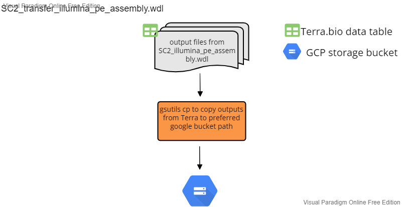
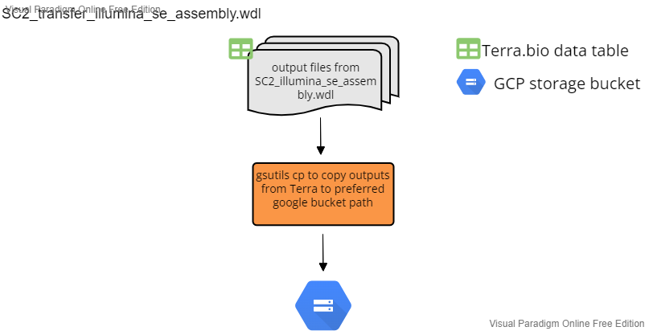
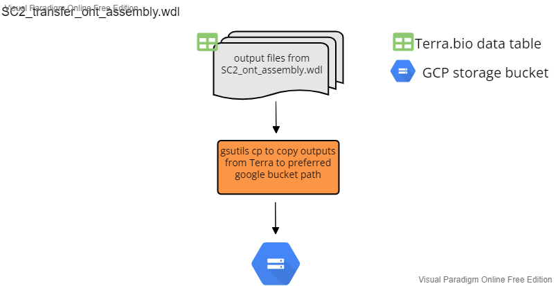

Transfer Workflows
After assembly, the assembly workflow outputs are then transferred from Terra back to a user specified google bucket for additional analysis and storage. Each workflow accepts "sample" as the root entity type and uses the data table from the corresponding assembly workflow data table that has been filled in with file paths to the outputs.
Illumina PE
File: SC2_transfer_illumina_pe_assembly.wdl
This workflow transfers the output file generated from SC2_illumina_pe_assemby to a user specified google bucket. Below is a summary of the workflow input variables along with the syntax used for the attribute column when setting up the workflow to run on Terra.bio. For the attributes, the "this.sample{terra_datatable_name}s." syntax refers Terra to pull the variable from the terra datatable as used for sample sets. The Google Bucket path describes where in the user google bucket the output file is transferred to.
| workflow variable | attribute (input syntax into workflow) | google bucket path |
|---|---|---|
consensus |
this.consensus | gs://{user_defined_gcp_bucket}/assemblies/ |
covhist_out |
this.coverage_hist | gs://{user_defined_gcp_bucket}/bam_stats/ |
cov_out |
this.coverage_out | gs://{user_defined_gcp_bucket}/bam_stats/ |
fastqc_clean1_html |
this.fastq_clean1_html | gs://{user_defined_gcp_bucket}/fastqc/ |
fastqc_clean1_zip |
this.fastqc_clean1_zip | gs://{user_defined_gcp_bucket}/fastqc/ |
fastqc_clean2_html |
this.fastqc_clean2_html | gs://{user_defined_gcp_bucket}/fastqc/ |
fastqc_clean2_zip |
this.fastqc_clean2_zip | gs://{user_defined_gcp_bucket}/fastqc/ |
filtered_reads_1 |
this.filtered_reads_1 | gs://{user_defined_gcp_bucket}/seqyclean/ |
filtered_reads_2 |
this.filtered_reads_2 | gs://{user_defined_gcp_bucket}/seqclean/ |
flagstat_out |
this.flagstat_out | gs://{user_defined_gcp_bucket}/bamstats/ |
out_dir |
this.out_dir | N/A |
renamed_consensus |
this.renamed_consensus | gs://{user_defined_gcp_bucket}/assemblies/ |
trimsort_bam |
this.trimsort_bam | gs://{user_defined_gcp_bucket}/alignments/ |
trimsort_bamindex |
this.trimsort_bamindex | gs://{user_defined_gcp_bucket}/alignments/ |
variants |
this.variants | gs://{user_defined_gcp_bucket}/variants/ |

Illumina SE
This workflow is not longer maintained.
File: SC2_transfer_illumina_se_assembly.wdl
This workflow transfers the output file generated from SC2_illumina_se_assemby to a user specified google bucket. Below is a summary of the workflow input variables along with the syntax used for the attribute column when setting up the workflow to run on Terra.bio. For the attributes, the "this.sample{terra_datatable_name}s." syntax refers Terra to pull the variable from the terra datatable as used for sample sets. The Google Bucket path describes where in the user google bucket the output file is transferred to.
| workflow variable | attribute (input syntax into workflow) | google bucket path |
|---|---|---|
adapter_stats |
this.sample{terra_datatable_name}s.adapter_stats | gs://{user_defined_gcp_bucket}/filter_reads/ |
consensus |
this.sample{terra_datatable_name}s.consensus | gs://{user_defined_gcp_bucket}/assemblies/ |
covhist_out |
this.sample{terra_datatable_name}s.coverage_hist | gs://{user_defined_gcp_bucket}/bam_stats/ |
cov_out |
this.sample{terra_datatable_name}s.coverage_out | gs://{user_defined_gcp_bucket}/bam_stats/ |
fastqc_clean_html |
this.sample{terra_datatable_name}s.fastq_clean_html | gs://{user_defined_gcp_bucket}/fastqc/ |
fastqc_clean_zip |
this.sample{terra_datatable_name}s.fastqc_clean_zip | gs://{user_defined_gcp_bucket}/fastqc/ |
filtered_reads |
this.sample{terra_datatable_name}s.filtered_reads | gs://{user_defined_gcp_bucket}/seqyclean/ |
flagstat_out |
this.sample{terra_datatable_name}s.flagstat_out | gs://{user_defined_gcp_bucket}/bamstats/ |
out_dir |
this.sample{terra_datatable_name}s.out_dir | N/A |
PhiX_stats |
this.sample{terra_datatable_name}s.PhiX_stats | gs://{user_defined_gcp_bucket}/filtered_reads/ |
renamed_consensus |
this.sample{terra_datatable_name}s.renmaed_consensus | gs://{user_defined_gcp_bucket}/assemblies/ |
trimsort_bam |
this.sample{terra_datatable_name}s.trimsort_bam | gs://{user_defined_gcp_bucket}/alignments/ |
trimsort_bamindex |
this.sample{terra_datatable_name}s.trimsort_bamindex | gs://{user_defined_gcp_bucket}/alignments/ |
variants |
this.sample{terra_datatable_name}s.variants | gs://{user_defined_gcp_bucket}/variants/ |

Oxford Nanopore Technologies (ONT)
File: SC2_transfer_ont_assembly.wdl
This workflow transfers the output file generated from SC2_ont_assemby to a user specified google bucket. Below is a summary of the workflow input variables along with the syntax used for the attribute column when setting up the workflow to run on Terra.bio. For the attributes, the "this.sample{terra_datatable_name}s." syntax refers Terra to pull the variable from the terra datatable as used for sample sets. The Google Bucket path describes where in the user google bucket the output file is transferred to.
| workflow variable | attribute (input syntax into workflow) | google bucket path when transfered |
|---|---|---|
covhist_out |
this.coverage_hist | gs://{user_defined_gcp_bucket}/bam_stats/ |
cov_out |
this.coverage_out | gs://{user_defined_gcp_bucket}/bam_stats/ |
filtered_fastq |
this.filtered_fastq | gs://{user_defined_gcp_bucket}/filtered_fastq/ |
flagstat_out |
this.flagstat_out | gs://{user_defined_gcp_bucket}/bamstats/ |
out_dir |
this.out_dir | N/A |
renamed_consensus |
this.renmaed_consensus | gs://{user_defined_gcp_bucket}/assemblies/ |
samstats_out |
this.samstats_out | gs://{user_defined_gcp_bucket}/bam_stats/ |
scaffold_consensus |
this.scaffold_consensus | gs://{user_defined_gcp_bucket}/assemblies/ |
trimsort_bam |
this.trimsort_bam | gs://{user_defined_gcp_bucket}/alignments/ |
variants |
this.variants | gs://{user_defined_gcp_bucket}/variants/ |
